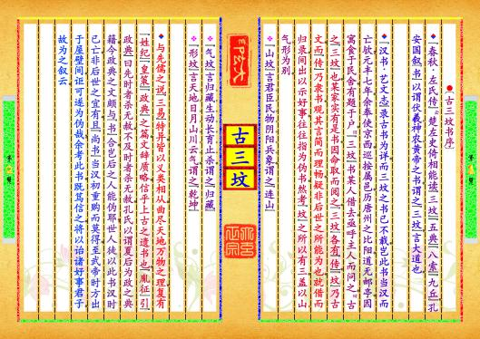
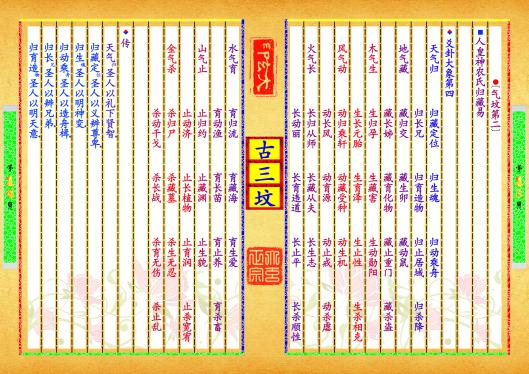
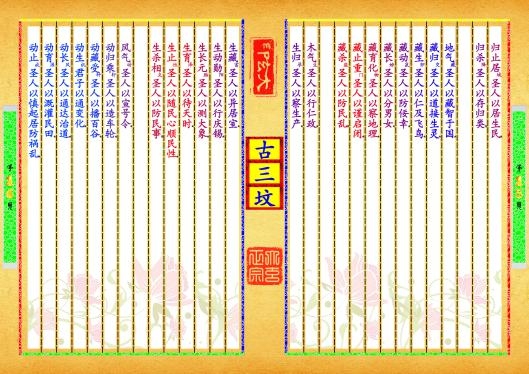

-
第【1-2】页 ▎⚫〔古三坟书序〕▼《春秋·左氏传》云，楚左史倚相能读《三坟》《五典》《八索》《九丘》。孔安国叙《书》以谓伏羲、神农、黄帝之书，谓之《三坟》，言大道也。▼《汉书·艺文志》录古书为详，而三坟之书已不载，岂此书当汉而亡欤？元丰七年，余奉使京西，巡按属邑，历唐州之比阳，道无邮亭，因寓食于民舍。有题于户，曰，《三坟》书某人借去。亟呼主人而问之，曰，古之《三坟》也，某家实有是书。因命取而阅之。《三坟》各有《传》，《坟》乃古文，而《传》乃隶书。观其言简而理畅，疑非后世之所能为也。就借而归录，间出以示好事，往往指为伪书。然考《坟》之所以有三，盖以山、气、形为别。❖《山坟》言君、臣、民、物、阴、阳、兵、象，谓之《连山》❖《气坟》言归、藏、生、动、长、育、止、杀，谓之《归藏》❖《形坟》言天、地、日、月、山、川、云、气，谓之《乾坤》▼与先儒之说《三易》特异。皆以义类相从，曲尽天地万物之理。复有《姓纪》《皇策》《政典》之篇，文辞质略，信乎上古之遗书也。《胤征》引《政典》曰先时者杀无赦，不及时者杀无赦。孔氏以谓夏后为政之典籍，今政典之文颇与《书》合，岂后之人能伪耶？世人徒以此书汉时已亡，非后世之宜有。且《尚书》当汉初重购而莫得，至武帝时方出于屋壁间，讵可遂为伪哉？余考此书，既笃信之，将以诒诸好事君子，故为之叙云。预览书籍 全文配置
-
第【3-4】页▎⚫〔山坟第一〕⬛天皇伏羲氏连山易▼爻卦大象第一◦崇山君▃◦君臣相▃◦君民官▃◦君物龙▃◦君阴后▃◦君阳师▃◦君兵将▃◦君象首◦伏山臣▃◦臣君侯▃◦臣民士▃◦臣物龟▃◦臣阴子▃◦臣阳父▃◦臣兵卒▃◦臣象肢◦烈山民▃◦民君食▃◦民臣力▃◦民物货▃◦民阴妻▃◦民阳夫▃◦民兵器▃◦民象体◦兼山物▃◦物君金▃◦物臣木▃◦物民土▃◦物阴水▃◦物阳火▃◦物兵执▃◦物象春◦潜山阴▃◦阴君土▃◦阴臣野▃◦阴民鬼▃◦阴物兽▃◦阴阳乐▃◦阴兵妖▃◦阴象冬◦连山阳▃◦阳君天▃◦阳臣干▃◦阳民神▃◦阳物禽▃◦阳阴礼▃◦阳兵谴▃◦阳象夏◦藏山兵▃◦兵君帅▃◦兵臣佐▃◦兵民军▃◦兵物材▃◦兵阴谋▃◦兵阳阵▃◦兵象秋◦叠山象▃◦象君日▃◦象臣月▃◦象民星▃◦象物云▃◦象阴夜▃◦象阳昼▃◦象兵气◦▼传◦崇山君，崇崇其高，君之象也；君臣相，相位至贵，君之臣也；君民官，君临百官以为民也；君物龙，龙善变化，能致云雨，为君物也；君阴后，君妻曰后，正婚姻也；君阳师，君师贤圣，以询道也；君兵将，君不兵众，专务将佐也；君象首，首统方来，君之象也。伏山臣，潜伏其山，臣之象也；臣君侯，建侯君民，分方治也；臣民士，士守常业，臣之民也；臣物龟，死不改㞯，劝以义也；臣阴子，子为臣阴，训事父也；预览书籍 全文配置
-
第【5-6】页
 臣阳父，父为臣阳，以训孝也；臣兵卒，臣以卒为兵，假其力也；臣象股，臣象股肱，以佐身也。烈山民，山有行烈，民之象也；民君食，民所尊崇，以食为本，路故为君矣；民臣力，民之使力，如君使臣也；民物货，四民之物，以货为本也；民阴妻，民之有妻，以成家也；民阳夫，女之从夫，以有归也；民兵器，生民之兵，以利用也；民象体，民为邦本，如肌体也。兼山物，高下相兼，物之象也；物君金，金主利用，物之君也；物臣木，木为金所克服，故为臣矣；物民土，土生万类，为物民矣；物阴水，水性润下，物之阴也；物阳火，火性炎上，照察惟明，物之阳也；物兵执，物之相克，胜制为兵也；物象春，春主发生，物之象也。潜山阴，深潜其山，阴之象也；阴君地，地德广大，为阴君也；阴臣野，野分地理，故为阴臣也；阴民鬼，人死曰鬼，阴之民也；阴物兽，麟为兽长，阴之物也；阴阳乐，乐本声音，为阴之阳也；预览书籍 全文配置
臣阳父，父为臣阳，以训孝也；臣兵卒，臣以卒为兵，假其力也；臣象股，臣象股肱，以佐身也。烈山民，山有行烈，民之象也；民君食，民所尊崇，以食为本，路故为君矣；民臣力，民之使力，如君使臣也；民物货，四民之物，以货为本也；民阴妻，民之有妻，以成家也；民阳夫，女之从夫，以有归也；民兵器，生民之兵，以利用也；民象体，民为邦本，如肌体也。兼山物，高下相兼，物之象也；物君金，金主利用，物之君也；物臣木，木为金所克服，故为臣矣；物民土，土生万类，为物民矣；物阴水，水性润下，物之阴也；物阳火，火性炎上，照察惟明，物之阳也；物兵执，物之相克，胜制为兵也；物象春，春主发生，物之象也。潜山阴，深潜其山，阴之象也；阴君地，地德广大，为阴君也；阴臣野，野分地理，故为阴臣也；阴民鬼，人死曰鬼，阴之民也；阴物兽，麟为兽长，阴之物也；阴阳乐，乐本声音，为阴之阳也；预览书籍 全文配置 -
第【7-8】页阴兵妖，阴告人主，厥罚妖异也；阴象冬，冬主闭藏，阴之象也。连山阳，山之相连，如阳气也；阳君天，天覆群物，阳之君也；阳臣干，十干相配，阳之臣也；阳民神，神变万物，阳之民也；阳物禽，凤皇之至，阳之物也；阳阴礼，礼主卑己，阳之阴也；阳兵谴，天垂谴象，阳之兵也；阳象夏，夏长万物，阳之象也。藏山兵，藏刚地，兵之象也；兵君帅，帅以统众，兵之君也；兵臣佐，佐以辅帅，兵之臣也；兵民军，军有行列，兵之民也；兵物材，圯生五材，兵之物也；兵阴谋，谋善计，兵之阴也；兵阳阵，陈兵誓众，兵之阳也；兵象秋，秋主杀物，兵之象也。叠山象，石叠其山，如天象也；象君日，日为阳精，象之君也；象臣月，月为阴精，象之臣也；象民星，星有行列，明相照也；象物云，云有异形，象万物也；象阴夜，夜景幽暗，象之阴也；象阳昼，昼日明察，象之阳也；预览书籍 全文配置
-
第【9-10】页象兵气，气形妖异，象之兵也。▼太古河图代姓纪第二◦清气未升，浊气未沉，游神未灵，五色未分，中有其物，冥冥而性存，谓之混沌，混沌为太始。太始者，元胎之萌也，太始之数一，一为太极。太极者，天地之父母也。一极易，天高明而清，地博厚而浊，谓之太易。太易者，天地之变也。太易之数二，二为两仪。两仪者，阴阳之形也，谓之太初。太初者，天地之交也。太初之数四，四盈易，四象变而成万物，谓之太素。太素者，三才之始也。太素之数三，三盈易，天地孕而生男女，谓之三才。三才者，天地之备也。游神动而灵，故飞、走、潜、化、动、植、虫、鱼之类，必备于天地之间，谓之太古。太古者，生民之始也。太古之人皆寿，盈易始三男三女，冬聚夏散，食鸟、兽、虫、鱼、草、木之实，而男女构精，以女生为姓。始三头，谓之合雄纪。生子三世。合雄氏没，子孙相传，记其寿命，是谓叙命纪。通纪四姓，生子二世。男女众多，群居连逋，从强而行，是谓连逋纪。生子一世，通纪五姓，是谓五姓纪。天下群居，以类相亲，男女众多，分为九头，各有居方，故号居方氏。居方氏没，生子三十二世，强弱相迫，欲生吞害。中有神人，提挺而治，故号提挺氏。提挺氏生子三十五世，通纪七十二姓，故号通姓氏。有巢氏生，太古之先觉，识于天地、草、木、虫、鱼、鸟、兽，俾人居巢穴，积鸟兽之肉，聚草木之实，天下九头咸归。有巢始君也，动止，群群相聚而尊事之。寿一太易，本通姓氏之后也。燧人氏，有巢子也，生而神灵，教人炮食，钻木取火，天下生灵尊事之。始有日中之市，交易其物，有传教之台，有结绳之政，寿一太易，本通姓氏之后也。伏羲氏，燧人子也，因风而生，故风姓。末甲八太七成，三十二易草木，草生月，雨降日，河汛时，龙马负图，盖分五色，文开五易，甲象崇山。天皇始画八卦，皆连山，名《易》。君臣民物阴阳兵象，始明于世。图出后二成二十二易草木，木枯月，命臣飞龙氏造六书。后草木一易，木王月，命臣潜龙氏作甲历。伏制牺牛，冶金成器，教民炮食。易九头为九牧，因尊事为礼仪，因龙出而纪官，因凤来而作乐。命降龙氏和率万民，命水龙氏平治水土，命火龙氏炮治器用，因居方而置城郭。天下之民号曰天皇、太昊、伏羲、有炮、升龙氏，本通姓氏之后也。预览书籍 全文配置
-
第【11-12】页▼天皇伏羲氏皇策辞第三◦昔在天皇，居于君位，咨于相，咨于将，咨于民，垂皇策辞。皇曰，惟我生无道，承父居方，三十二易草木，上升君位。我父燧皇归世，未降河图，生民结绳，而无不信。于末甲八太七成，三十二易草木，惟我老极。时生人众多，群群虫聚，欲相吞害。惟天至仁，于草生月，天雨降河，龙马负图，神开我心，子其未生，我画八卦，自上而下咸安。其居后二成二十二易草木，皇曰，命子襄居我飞龙之位，主我图文，代我咨于四方上下，无或私。襄曰，咸若咨众之辞，君无念哉。后一易草木，皇曰，命子英居我潜龙之位，主我阴阳甲历，咨于四方上下，无或差。英曰，依其法亦顺，君无念哉。皇曰，无为。后二十二易草木，昊英氏进历于君曰，历起甲寅。皇曰，甲日寅辰，木王于夘，乃于众于传教台，告民示始甲寅。易二月，天皇升传教台，乃集生民后女娲子，无怀俌民之。右上相共工，下相皇桓。飞龙朱襄氏、潜龙昊英氏居君左右。栗陆氏居北，赫胥氏居南，昆连氏居西，葛天氏居东，阴康氏居下。九州之牧，各统其人群，居于外。皇曰，咨子上相共工，我惟老极无为，子惟扶我正道，咨告于民，俾知甲历，日月岁时自兹始，无或不记，子勿怠。共工曰，工居君臣之位，无有劳，君其念哉。皇曰，下相皇桓，我惟老极无为，子惟扶我正道，抚爱下民，同力咨告于民，俾知甲历，日月岁时自兹始，无或不记，子其勿怠。桓曰，居君臣之位，无有劳，君其念哉。皇曰，栗陆子居我水龙之位，主养草木，开道泉源，无或失时，子其勿怠。陆曰，竭力于民，君其念哉。皇曰，大庭主我屋室，视民之未居者喻之，借力同构其居，无或寒冻。庭曰，顺民之辞。皇曰，阴康子居水土，俾民居处无或漂流，勤于道，达于下。康曰，顺君之辞。皇曰，浑沌子居我降龙之位，惟主于民。皇曰，昆连子主我刀斧，无俾野兽义虎之类伤残生民，无俾同类大力之徒区遂微弱，子其伏之。连曰，专主兵事，君无念哉。皇曰，四方之君，咸顺我辞，则世无害惟爱于民，则位不危。皇曰，子无怀安，惟安于民，民安子安，民危子危，子其念哉。预览书籍 全文配置
-
第【13-14】页 ▎⚫〔气坟第二〕⬛人皇神农氏归藏易▼爻卦大象第四◦天气归▁◦归藏定位▁◦归生魂▁▁◦归动乘舟▁◦归长兄▁▁◦归育造物▁◦归止居域▁◦归杀降◦地气藏▁◦藏归交▁▁◦藏生卯▁▁◦藏动鼠▁▁◦藏长姊▁▁◦藏育化物▁◦藏止重门▁◦藏杀盗◦木气生▁◦生归孕▁▁◦生藏害▁▁◦生动勋阳▁◦生长元胎▁◦生育泽▁▁◦生止性▁▁◦生杀相克◦风气动▁◦动归乘轩▁◦动藏受种▁◦动生机▁▁◦动长风▁▁◦动育源▁▁◦动止戒▁▁◦动杀虐◦火气长▁◦长归从师▁◦长藏从夫▁◦长生志▁▁◦长动丽▁▁◦长育违道▁◦长止平▁▁◦长杀顺性◦水气育▁◦育归流▁▁◦育藏海▁▁◦育生爱▁▁◦育动渔▁▁◦育长苗▁▁◦育止养▁▁◦育杀畜◦山气止▁◦止归约▁▁◦止藏渊▁▁◦止生貌▁▁◦止动济▁▁◦止长植物▁◦止育润▁▁◦止杀宽宥◦金气杀▁◦杀归尸▁▁◦杀藏墓▁▁◦杀生无忍▁◦杀动干戈▁◦杀长战▁▁◦杀育无伤▁◦杀止乱◦▼传◦天气归，圣人以礼下贤智；归藏定位，圣人以义辨尊卑；归生魂，圣人以明神变；归动乘舟，圣人以造舟楫；归长兄，圣人以辨兄弟；归育造物，圣人以明天意；预览书籍 全文配置
-
第【15-16】页 归止居域，圣人以居生民；归杀降，圣人以存归类。地气藏，圣人以藏智于国；藏归交，圣人以道接生灵；藏生卯，圣人以仁及飞鸟；藏动鼠，圣人以防佞幸；藏长姊，圣人以分男女；藏育化物，圣人以察地理；藏止重门，圣人以谨启闭；藏杀盗，圣人以防民乱。木气生，圣人以行仁政；生归孕，圣人以察生产；生藏害，圣人以异居室；生动勋阳，圣人以行庆锡；生长元胎，圣人以测大象；生育泽，圣人以待天时；生止性，圣人以随民心顺民性；生杀相克，圣人以防民事。风气动，圣人以宣号令；动归乘轩，圣人以造车轮；动藏受种，圣人以播百谷；动生机，君子以通变化；动长风，圣人以通达治道；动育源，圣人以溉灌民田；动止戒，圣人以慎起居防祸乱；预览书籍 全文配置